Welcome to Chapter I of Achroma: Chronicles of the Five Realms.
This is a collectable card game based in a unique fantasy universe with a rich story. 15 years ago my wife and I had our first child, and in that time, circumstances were tough so we decided to create a world for our new little family to escape to.
We’ve previously explored bringing this universe to life in the form of a book, an app and it’s now a game. It’s the first product that we, Realm Runner Studios,have produced and we are excited, and a little bit nervous, to introduce it to you.
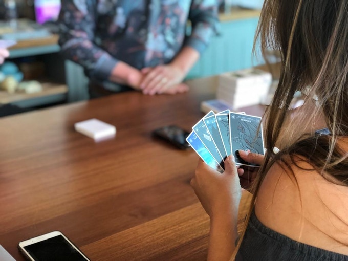
This is a card game for two or more players. Each player starts with a deck of 30 cards called a Palette, and an Achroma Bank of 10. The Bank is both your life total and a currency that allows you to play cards from your hand. There are two ways to win a standard game of Achroma;
Chroma: Be the first player to have 30 Achroma in your Bank.
Achrom: Reduce your opponent(s) Bank to 0.
And remember, don’t let your Bank go to 0, or you will lose the game.
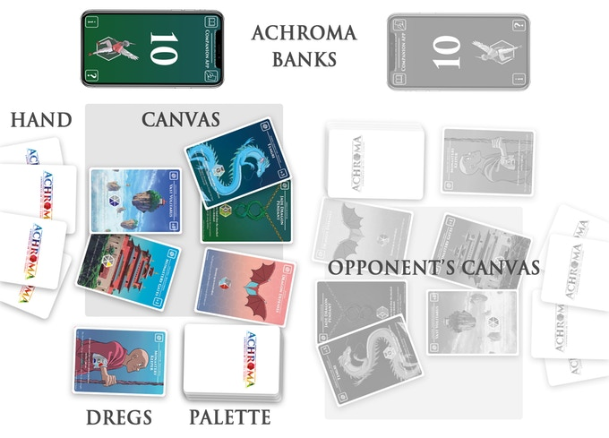 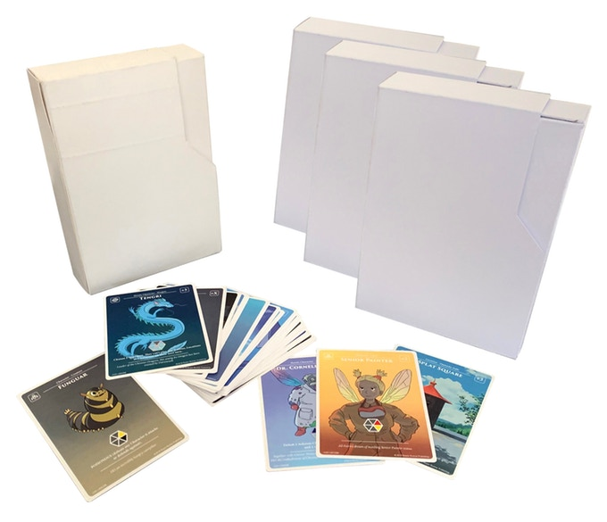
The kickstarter realm box contains two 30 card decks from the realm you choose and a players guide. One deck is an Achrom palette and the other is a Chroma palette. Each palette contains:
- 1 Legendary Card
- 3 Rare Cards
- 10 Uncommon Cards
- 16 Common Cards
All of our cards will be printed on high quality 350gsm* card with a matte finish. The suppliers we are using are local in the UK and can provide quick turn arounds.
*the higher the number the higher the quality -average playing cards are 270-300gsm.
The Rare and Legendary cards will have a special clear coating helping to distinguish them from common and uncommon cards and add value. This also reduces the risk of forgery.

Card Types
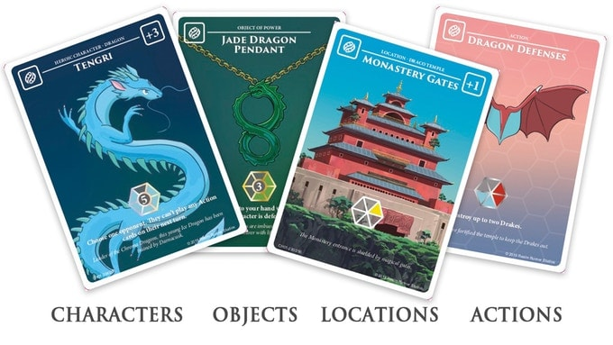
All Achroma cards fall within one of four types:
Character Cards represent heroes, residents and creatures of the five realms. Characters may only enter the Canvas in your Deploy step and stay on the Canvas until defeated. While in play, Characters can attack and defend players and attack other Characters.
Location Cards depict landmarks, significant sites and areas of power. Once Deployed, they provide passive benefits. Locations can’t be attacked, nor can they defend. Locations may only enter the Canvas in your Deploy step.
Objects of Power are mighty weapons, talismans and tools wielded by Characters. Once Deployed, they are attached to a Character card and affect them in different ways. If the Character they are attached to is removed from play, the object of power goes in the Dregs.
Action Cards are single use cards. You can play them at any time during your turn. When Deployed, carry out the effects immediately and then place the card in your Dregs.
Achroma Companion

We are building a prototype companion app that will be free to download. It is currently in iOS and we will build an Android version too. The purpose of the app is to add to the playing experience of the game, with the ability to add features. The first features will be:
- Achroma Bank to keep track of your bank total throughout the game
- Tutorial to help players learn the game explaining each step of your turn
- Rulebook with a glossary of terms and a search function
- Card Database showing all of the cards in Chapter I and a camera function to add your own cards to your collection
- Profile with account functionality so that you can keep a track of wins and losses, and change your avatar
- News & Updates to find out the latest from Realm Runner Studios
Choose your Realm
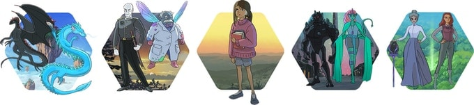

The dragon realm of Draco Planum was a beautiful place before being drained of nearly all it’s chroma due to the great seige of Flutterby Falls. It’s been over a year, and with no chroma to fuel their magic all but 2 of the elder dragons have turned to stone. Tenebris the achrom elder dragon, is feeding off of the dark energy covering the realm, leaving the young dragons to fend for themselves. A squad of fairies led by Poggle Chudders and Maple Flutter have found themselves stranded in the realm hiding out in draco temple, the final refuge and beacon of hope for the dragons. Inside the temple is a young group of dragons, lead by Tengri under the protection of the temple’s powerful Elder Dragon Darnacusk.

Chroma Palette: Draco Temple Dragons
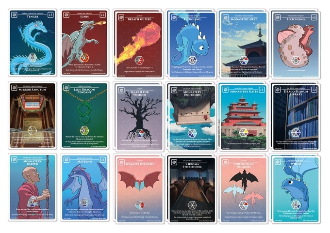

Achrom Palette: Stonewaste Drakes
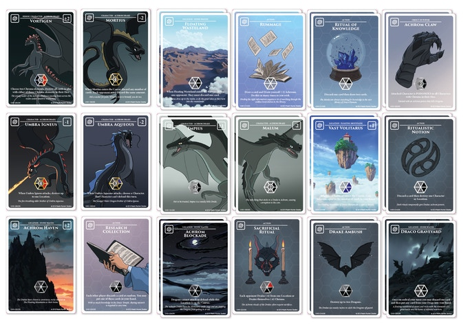

Flutterby Falls was once the most revered painting school in the five realms before The Great Collapse - now it is the last refuge for the resistance. You enter this realm amidst a great battle caused by the corrupted wingless fairies known as The Ravaged led by the mad PixieKing Craven Tratorious. Meanwhile the peaceful painting fairies scramble together an elite team of protectors led by the creator of colour Dr. Cornelius Hue, whilst the school attempts to continue to paint the realms. As the long seige takes it’s toll on the Guardians of Flutterby Falls, squads of fairies are fired out through toadstool cannons across the realms to perform their painting duties at risk of being shot down, captured by The Ravaged and transformed into pixies themselves.
Chroma Palette: Flutterby Fall Fairies
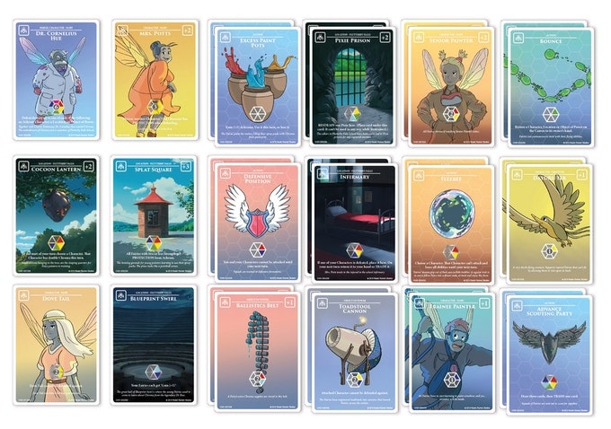
Achrom Palette: Fallen Stone Pixies
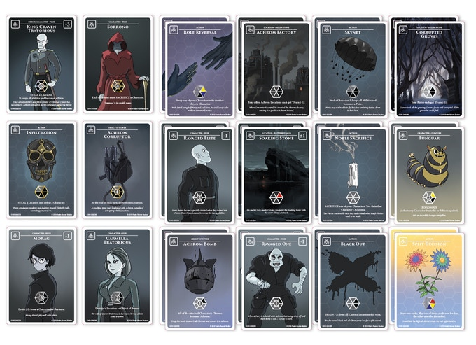
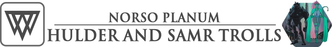

A ceiling of ore, rock and ice replaces the sky as if the earth folded in on itself in the underealm. Shards of light jut through the cracks in the ceiling like stars in a nights sky. The Jotnar created this realm as a safe haven for their kinfolk after being hunted by humans. This crude realm isn’t lavish - but it’s what these trolls call home. The Lacringi tribe, led by their beautiful cheiftess Astrid, is made up of Hulder Trolls, attractive human looking creatures with long tails and hollow backs filled with moss and bark. They work tirelessly mining and quarrying the magical metal ‘orium’ residing in the ceiling. Using catapults and mining equipment they scale the ceilings with rope, holding on with their tails, hacking away at the Stalagtites dropping orium down into the nets below ready for processing. Back in Lacringi village the realm renowned blacksmiths craft beautiful metal work from the orium; embuing objects of power with colour, causing sparks of rainbows to dance out of their forges. The village is carved out of the cliff of the quarry, at the centre isa huge beautiful Hulder Totem covered in colourful orium.
Chroma Palette: Lacringi Hulder Trolls
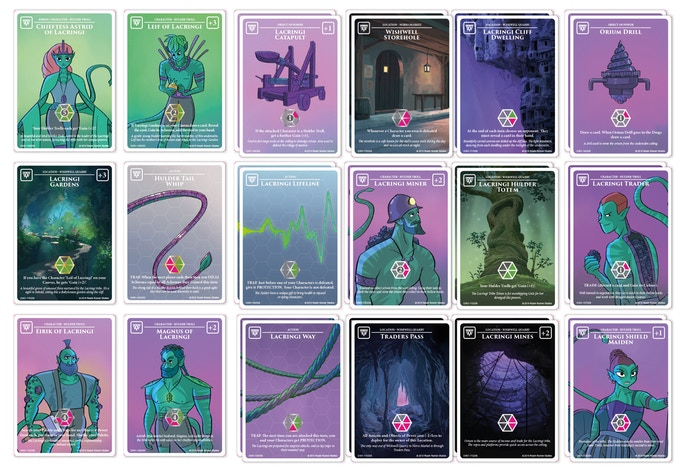

Across the quarry in the distance there is a crack in the ceiling with water cascading through creating a beautiful waterfall filling a lake. This is where the Brisgavi tribe live led by the unruly cheiften Snorre. The Samr Trolls that live there are large Ice trolls that hunt and fish in and around the lake. But recently the cascading waterfall has turned an ominous black, and the Brisgavi tribe has become more restless than ever. Thankfully the Lacringi Shield Maidens keep the Brisgavi Beserkers at bay from invading their village…for now.
Achrom Palette: Brisgavi Samr Trolls
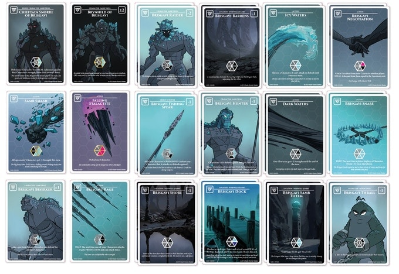
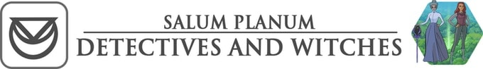

It is a time of confusion across Salum Planum as The Great Plague spreads through the realm causing madness and eventually death to engulf its inhabitants as it drains them of all colour. A pitch black cloud hovers over Curdle Hill, and the high witches and wizards of Ludlam are certain it is the cause of this dire scenario. They have sent a team of the Magus Elite’s best detectives into certain danger to investigate in the hope the may stem this plague before it hits the city and consumes all.

Chroma Palette: Magus Elite Detectives
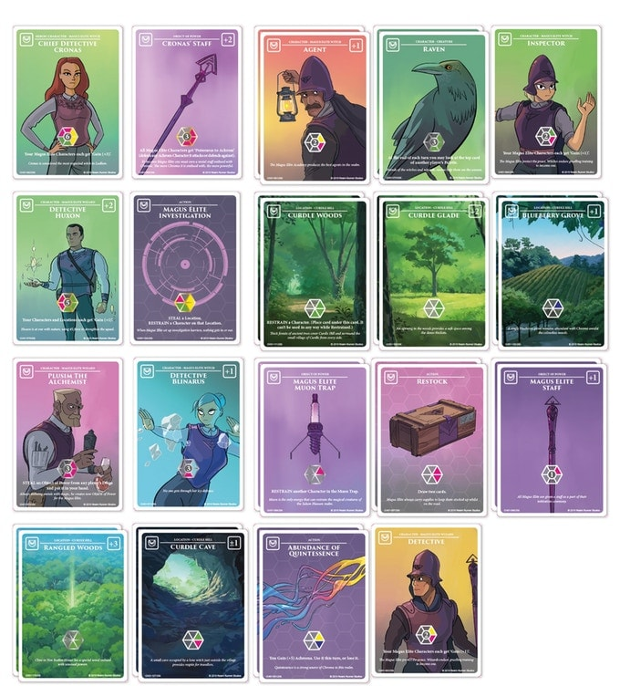
Nestled in the thick forests of Curdle Hill sits the village of Curdle itself, now consumed with darkness. All manner of dangerous creatures reside in the forests, and the residents of Curdle, now completely colourless, are either mad or dead. Just entering the forest sends panic through the detectives. As the plague creeps ever closer to the city, the high wizards and witches summon their crystal-gazer to tell them what the future holds, however the future is impossible to read, showing nothing but black. With their best detectives out of the city and struggling to foresee the outcome this dark cloud brings the high wizards and witches resort to calling upon the mythical Realm Runners for help.

Achrom Palette: Curdle Hill Occultists
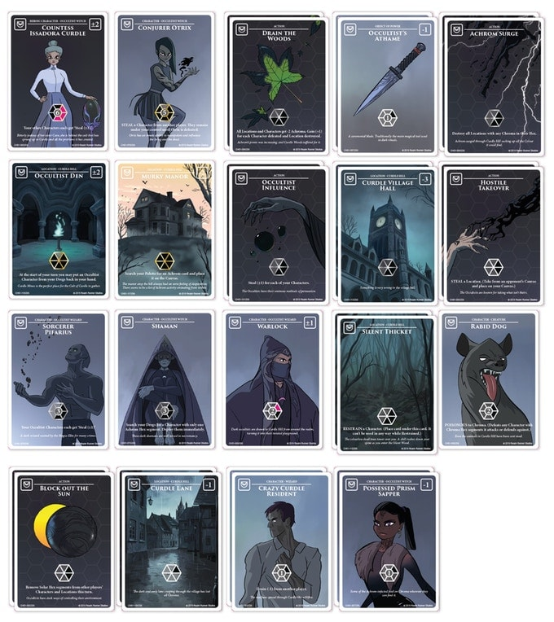
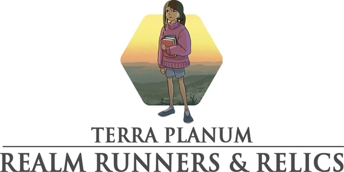
This is earth as we know it. Completely disconnected from the other realms, only a few relics remain that, if touched, send you through to one. Four children from earth are in dire situations finding themselves thrown into a new world tasked with the great responsibility of becoming a ‘realm runner’. One of those children is Ray…
Ray Kasongo and the Realm Relic
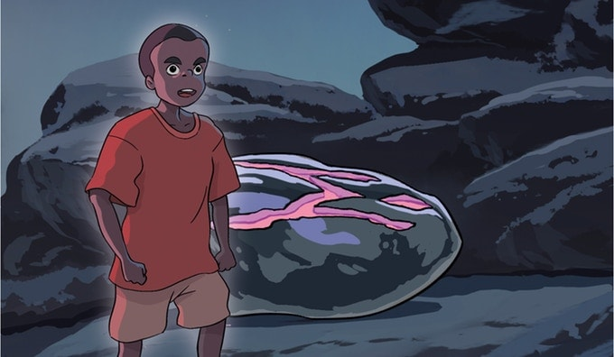
A small 9 year old Congolese boy in the Democratic Republic of Congo fits perfectly in the tight cobalt mining tunnels. His father died and he was taken from outside of his village by guerilla forces who told him is village was destroyed and mother was dead, tricking him into joining them at their camp. Ray joined dozens of children with similar stories, being kept in awful conditions with very little food or water, before being put to work down the dangerous hand dug tunnels mining cobalt. As the heavy rain lashed down on Ray his boss hit him hard on the back of the head shouting at him to get down the mine and dig fast. Ray headed down the dangerous handmade ladder into the dark wet mine shaking. As he dug further and further into the earth his hands began to feel raw he felt something warm under his fingertips. He dug around the warmth revealing a beautiful purple glowing relic. He picked up the relic and put it in his pocket. The earth began to shake around him. As the muddy walls of the mine shaft slipped he scrambled to reach for the wooden ladder, shouting for help it fell apart in front of him. His boss shouted for him to throw up the cobalt he had found and then he would throw down a rope. Ray threw the cobalt up to his boss, the walls fell in on him, flooding the narrow shaft with thick mud. Ray panicked, struggling to free himself from the tightening grip of the mud glimpsing up at the tiny ray of light that remained at the mouth of the mine. As the mine collapsed, the mud slid over Ray’s face and the light vanished. He was gone…
A pulsing buzz woke Ray. The last thing he remembered in the pitch black mud of the mine was a strong vibration emanating from the relic.